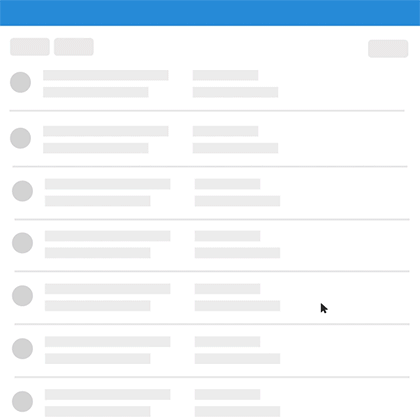
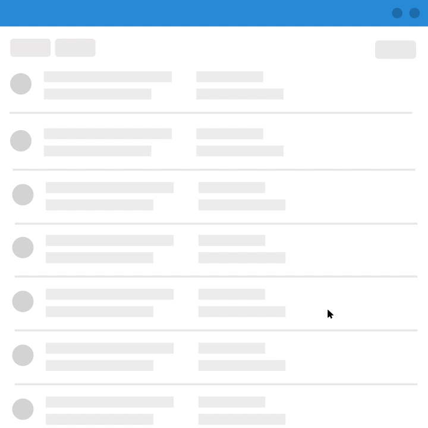
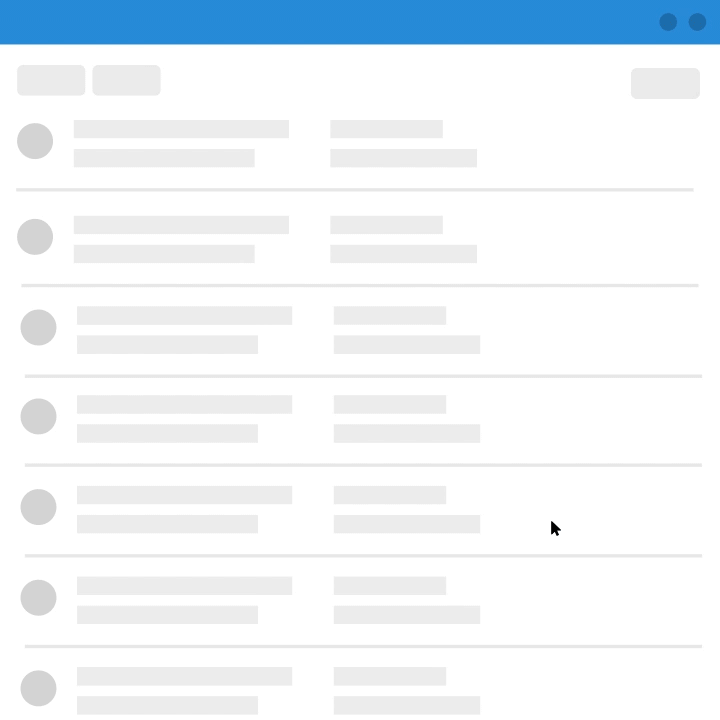

Navigation & Tools
The Problem
”How do you build a flexible navigation while the road map could be anything?”
This is one of the questions UI/UX Services at EMC has been answering over the last 6 months. We were tasked with designing a bullet-proof information hierarchy and navigational structure for three ongoing applications with radically different feature-sets.
Guiding Principles
Over three meetings, we presented research and reviewed the types of interactions and structures most common to EMC products. When research concluded, three unifying principles emerged out of the dialog to guide the following solutions.
-
Flexibility - Because some feature’s complexity approaching that of stand-alone applications in other fields, extendibility became a key focus for our team.
-
Clutter-Free - The actions and management of complex data flows also necessitated a toolset and navigation that was out of the way when not needed, providing users of all screen sizes (desktop and mobile) a distraction-free workspace.
-
Powerful - “Power user” is an attribute of two of our three most common Personas, so a smart navigation that provided access to 2nd, 3rd and ancillary data points was also a must-have.
The Results
After 6 months, we delivered the last of our framework changes to EMC-UI.

Omni-Nav
We settled on an Omni-Navigational window, build out with each mini-application inside the main pain, as well as system Utilities.

The omni-search at the top works from an index of the entire site; you can access pages 2 or 3 levels deep within that single page, as well as Tags and Events thrown by the Application itself.
Details We spent an extra hour and a half adding hotkeys for opening, searching and traversing the omni-panel. We had a lot of fun adding in these little details for the power user personas.
Secondary Nav
The secondary navigation was actually the last piece of the puzzle we committed to. We iterated through 4 different approaches before we landed the final solution. The prototype below, coded by Jase Smithwas one of the tests we threw against the solution.
See the Pen UI Concept: The Whale by Jase (@jasesmith) on CodePen.
App Utilities
Rounding out the approach were the utilities attached to each view, Multi-Select Actions, Notifications and site-wide Searching.
  
Results
- Fewer Clicks - Simple hueristic analyis of navigation and common actions saw a 25-35% reduction in task complexity.
- Coherent IA - The userflow maps we created before were rats nests. These were saner, and have already erased the difficult navigational decisions we’ve had to make.
- Better Tests - We approached an outside UX Research org to operate separately to keep us honest through the developement. Separate UX Researchers confirmed our test results with vastly improved usability KPIs.
- Proliferation - This work combined with higher inter-org outreach saw an increase from